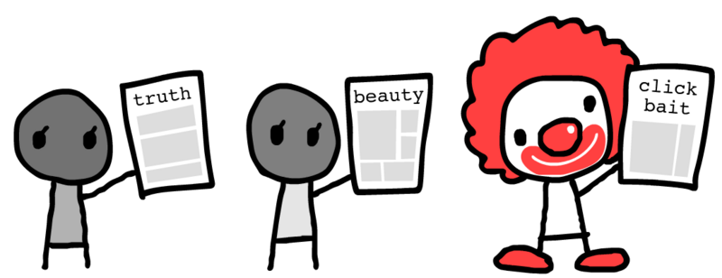
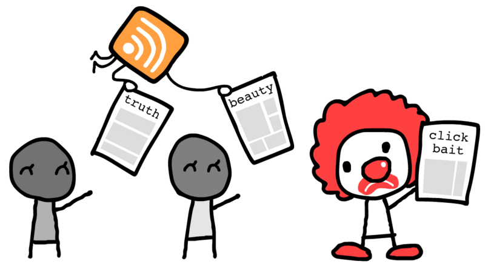
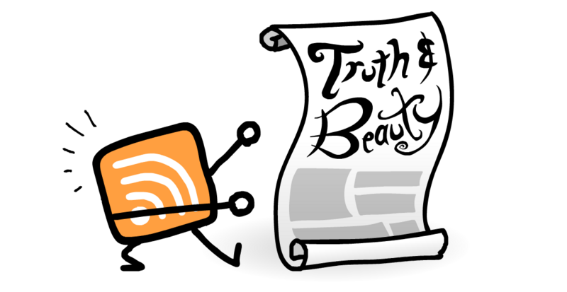

4 min reading time
Imagine an open version of Twitter or Facebook News Feed, with no psy-op ads, owned by no oligopoly, manipulated by no algorithm, and all under your full control.
Imagine a version of the newsletter where you don’t have to worry about them selling your email to scammers, labyrinth-like unsubscribe pages, or stuffing your inbox with ever more crap.
Now imagine this existed and was extremely popular 15 years ago. Then we got suckered by the shiny walled gardens.
Well, it’s time to make like a tree and go back to the future, baby!
Unlike newsletters where give each publisher your email (and they may abuse that trust), RSS works on a “don’t call me, I’ll call you” policy.
An RSS feed is a text file on a website. It’s just a bunch of posts – no tracking or “personalization” – like a printed newspaper:

Then, whatever RSS reader app you use – you can use any app made by anyone – it’ll call the websites for the feeds you specifically opted into, no more or less. The websites can’t force it in the other direction.

Your app then shows you your posts in good ol’ reverse chronological order. (Some apps let you add extra filters, but unlike social media algorithms, you control ’em.) Apps also make the posts prettier than raw text:

Really Simple, indeed!
(Note: there’s something very similar to RSS called “Atom”, but all modern apps work equally with both.)
First, you need a reader app. I’m currently using the minimalist Inoreader, but Feedly is the most popular, and folks I know use The Old Reader. See this list of readers.
To add a feed to your app, just paste a link to the blog/site, and your app will automatically find the feed! RSS also lets you follow creators on YouTube, Substack, Medium, and more.
But what to follow? Might I recommend…
- Scott Young’s Blog : about learning & productivity
- Questionable Content : a comic about queers and robots
- Webcomic Name : the comic that goes “oh no”
- 3Blue1Brown : a YouTube channel that shows the beauty of math
- Aimkid the smoothest, most expressive animations I’ve seen in a long time
(And, selfishly: my new interactive, educational projects and my blog)
Well, Google killed Google Reader in 2013, the #1 RSS reader at the time. This was to make way for Google Plus, which failed. The sacrificial lamb was for nothing.
But Google only did what nearly everyone – including yours truly – did in 2013: leave the open, decentralized Web 1.0 for the shiny new Web 2.0 platforms. Why? Well, it was more fun & convenient.
But now in 2021, for most of us, social media is very not fun and not convenient. That’s why I went back to the future with RSS, and wrote this post encouraging you to do the same!
(Ok, RSS had two more problems: 1) Getting overwhelmed with feeds. As said above, the only cure is to trim ruthlessly. 2) RSS lets you serve text/link/image ads, but not the creepy user-tracking ads. In 2013 that was the “best” way make money on the web, but these days ad revenue is dying, and subscriptions like Patreon/Substack are thriving.)
And that’s all, folks! Now you know how to escape the attention-draining, empathy-killing, critical-thought-suffocating siren song of the algorithms. And get your inbox less cluttered with newsletters.
Here’s to a renaissance for a kinder, better web. ??
all my work is freely available under a public domain waiver! so feel free to reuse & remix it in your blog or classroom – attribution is amazing & appreciated, but i won’t send legal goons over it